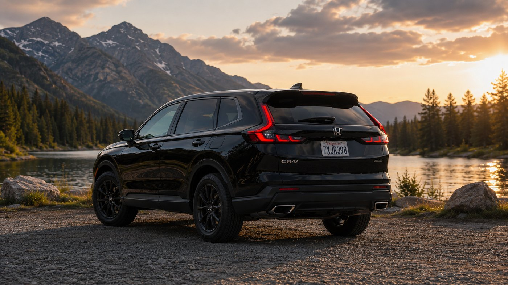
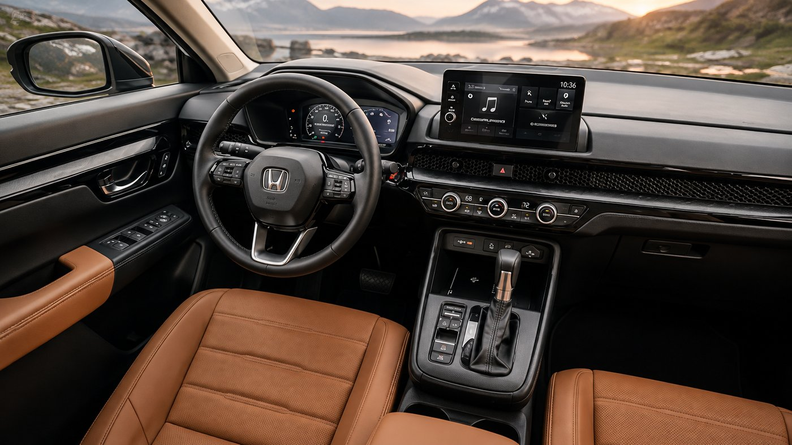
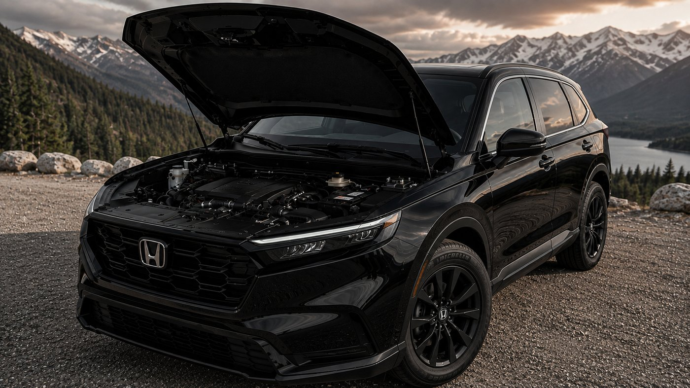
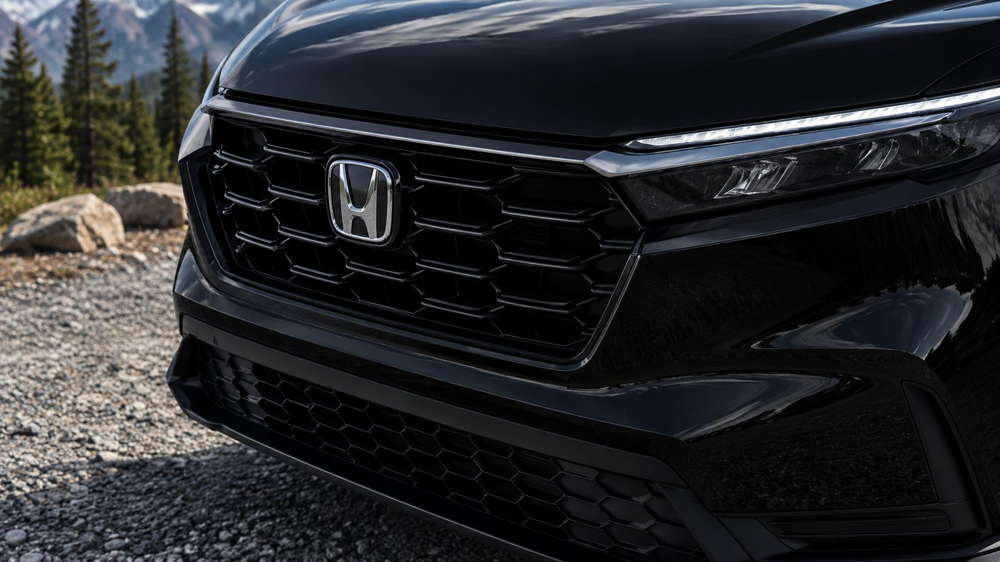

The CR-V has been Honda's safest bet for almost thirty years, and the 2026 lineup doesn't change that reputation so much as split it into two directions. There's the familiar gas CR-V, running the same 1.5 liter turbo four the model has used for years. And there's the CR-V Hybrid, which used to be positioned as the upmarket option and now comes close to being the default recommendation, at least on paper.
Spending time in both back to back makes the tradeoff clearer than any spec sheet does on its own.
The gas CR-V: familiar, and that's the appeal
The standard CR-V runs a 1.5 liter turbocharged four cylinder making 190 horsepower and 179 lb-ft of torque, paired with a CVT. Front-wheel drive versions are EPA rated at 28 mpg city, 33 highway, 30 combined. All-wheel drive trims give up a little, landing at 27 city, 31 highway, 29 combined. Pricing starts at $30,920, which keeps it comfortably positioned as the value entry point into the lineup.
None of that reads as exciting, and it isn't meant to. What the gas CR-V has going for it is a kind of mechanical simplicity that's becoming rarer. Throttle response is linear and predictable, the CVT is well tuned enough that it doesn't drone under hard acceleration the way cheaper CVTs do, and there's nothing about the driving experience that requires the driver to think about it. For a lot of buyers, that's the entire point of owning a CR-V in the first place.

Advertisement
The hybrid closes the gap, then keeps going
The CR-V Hybrid swaps in a 2.0 liter four cylinder paired with two electric motors, for a combined 204 horsepower and a notably stronger 247 lb-ft of torque. That torque advantage is the number that actually matters day to day. It shows up as instant response off the line and less hunting from the transmission on hills, since the electric motors fill in the gaps while the gas engine settles into its efficient range.
Fuel economy is where the hybrid stops being a nice-to-have and starts being the obvious choice for most buyers. EPA estimates run as high as 43 mpg city, 36 highway, 40 combined on the lighter trims, and even the heavier, more optioned Sport Touring trim stays in the high 30s combined. Compared to the gas model's 30 mpg combined, that's not a marginal improvement, it's a genuinely different ownership experience, especially for anyone doing real city mileage.
The tradeoff is upfront cost. Hybrid trims start at $35,630, about $4,700 more than the base gas CR-V, and climb toward $42,250 for a fully loaded Sport Touring Hybrid. The gas CR-V also edges it out on towing, rated for 1,500 pounds against the hybrid's 1,000, a small but real difference for anyone hauling a trailer or small boat.

Inside, the two feel nearly identical
Step inside either version and the differences mostly disappear. Both get the same redesigned dashboard, with a honeycomb mesh panel hiding the vents and a touchscreen that's finally sized appropriately instead of feeling like an afterthought. Higher trims add leather with contrast stitching that looks genuinely upscale for the segment, wireless Apple CarPlay, and a wireless charging pad. Honda Sensing, the brand's suite of driver assistance features including adaptive cruise and lane keeping, comes standard across the board regardless of powertrain.

So which one is actually better
For a buyer doing mostly highway miles, or one who's decided in advance that the lower purchase price matters more than what happens at the pump, the gas CR-V is still a genuinely good vehicle, not a compromise pick. It drives well, it's proven, and $30,920 buys real value in this segment.
But for most people cross-shopping the two, the hybrid is the smarter buy once the math is actually run. The extra few thousand dollars at purchase gets clawed back over a few years of city driving through fuel savings alone, and that's before accounting for the stronger torque and quieter operation. Honda's own ownership cost estimates put the hybrid's five-year total, including fuel, insurance, and depreciation, within a few thousand dollars of the gas model despite the higher sticker price. Unless towing capacity or upfront budget is the deciding factor, the hybrid has become the version of the CR-V that's easiest to recommend without a caveat attached.
